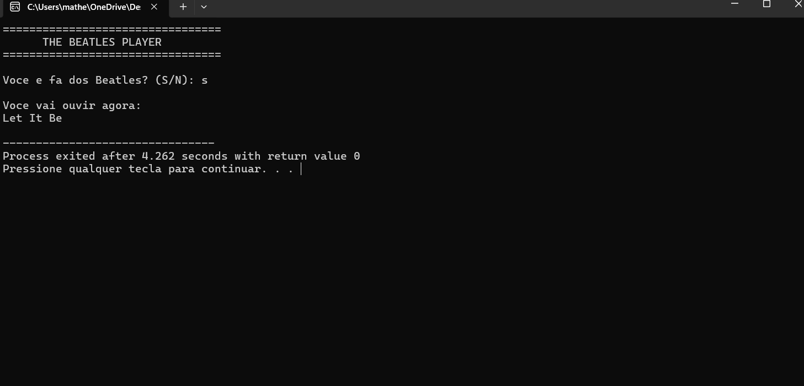

Sobre Mim
Olá! Meu nome é Matheus Yuri Sadamatsu e sou estudante de Desenvolvimento de Software Multiplataforma (DSM).
Tenho formação técnica em Eletroeletrônica pelo SENAI e atualmente estou desenvolvendo meus conhecimentos em programação, desenvolvimento web e tecnologia.
Meu objetivo é adquirir experiência profissional e continuar evoluindo na área de desenvolvimento de software.
Formação
Ensino Médio Completo
Técnico em Eletroeletrônica
SENAI
Desenvolvimento de Software Multiplataforma (DSM)
FATEC - Cursando
Habilidades
Projetos
The Beatles Player

The Beatles Player é um projeto desenvolvido em linguagem C para praticar lógica de programação e interação com o usuário.
O programa pergunta se o usuário é fã dos Beatles e realiza o sorteio aleatório de uma música da banda.
Tecnologias Utilizadas
- Linguagem C
- GitHub
- VS Code